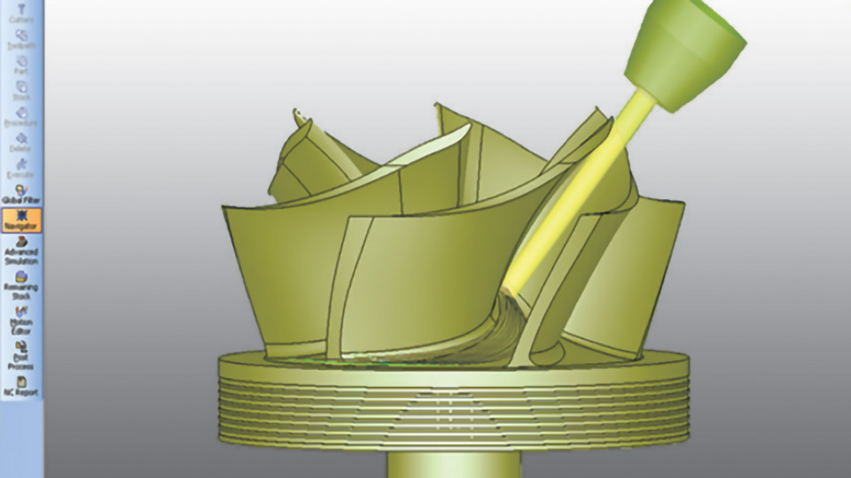
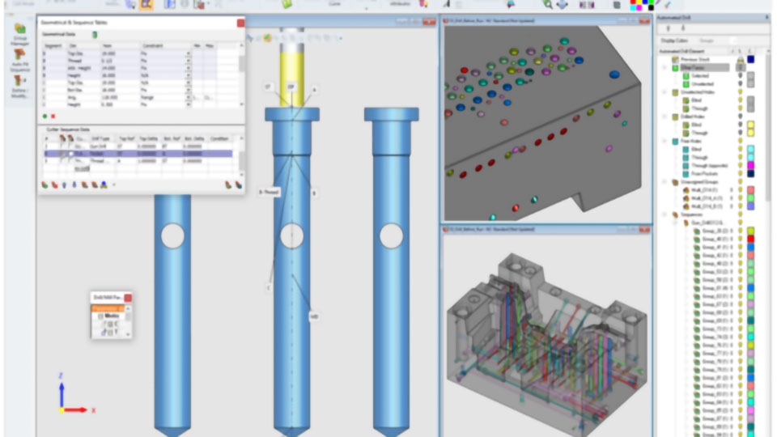
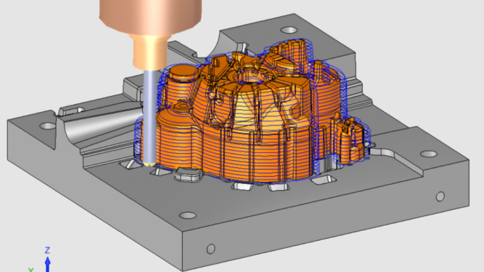
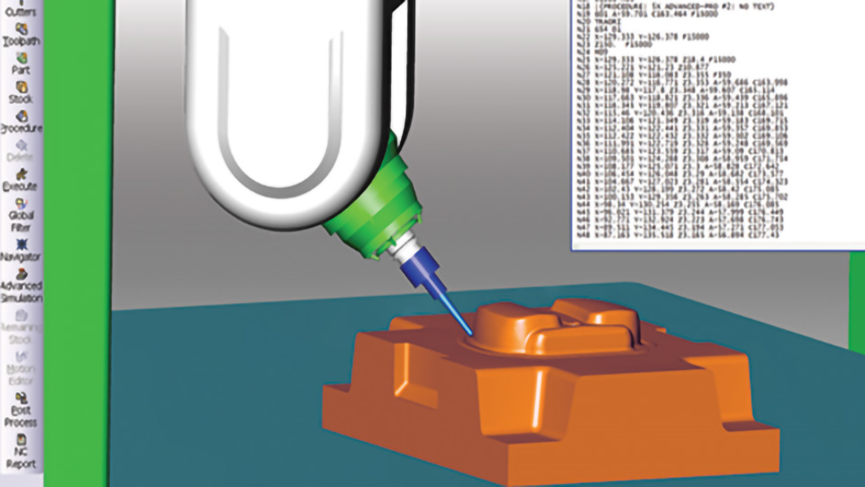

Cimatron NC ofrece una programación NC eficaz con una amplia gama de estrategias de fresado y taladrado, funcionalidad CAD integrada, desbaste eficaz y acabado de alta calidad, asiento de mecanizado de placas y taladrado automatizado, programación de 5 ejes y simulación y verificación.
Cimatron CAM proporciona potentes herramientas para la programación eficaz de máquinas de mecanizado CNC de 2.5 ejes a 5 ejes, incluidas estrategias especializadas para el mecanizado de moldes, placas, matrices y piezas discretas.
Un entorno CAD híbrido y diversas herramientas de diseño ayudan a preparar rápidamente modelos sólidos para la producción
Genere trayectorias de herramientas seguras y precisas, y aproveche las estrategias especializadas para fresado y taladrado
Mecanice con confianza utilizando la simulación que representa la cinemática de máquinas, fijaciones y piezas de trabajo

Un entorno CAD híbrido permite a los diseñadores reparar fácilmente modelos y modificar diseños utilizando una combinación de funciones de alambrado, superficies y sólidos. Las herramientas de diseño especializadas facilitan la aplicación de dibujos y redondeos, la eliminación o modificación de redondeos, el tapado de orificios y ranuras y la ampliación de superficies. Las herramientas que detectan y analizan cambios en la geometría ayudan a aumentar la confianza en los diseños.

Mejore la eficiencia de programación con estrategias de mecanizado especializadas que permiten a los programadores CNC mantener un control total sobre todas las operaciones de mecanizado de 5 ejes. Cimatron proporciona estrategias para mecanizado complejo de álabes, impulsores, blisks, turbinas, etc. Una completa biblioteca de postprocesadores probados para máquinas herramienta de 5 ejes y controladores ayuda a garantizar la precisión y la eficacia.

Cimatron CAM proporciona una estrategia de desbaste de cajeras que simplifica las operaciones de mecanizado de alta velocidad (HSM) y el mecanizado de 2.5 ejes de cajeras abiertas y cerradas. La rápida eliminación de material hace que el mecanizado de cajeras abiertas sea más productivo, mientras que las plantillas que ayudan a automatizar las operaciones de cajeado y perfilado aumentan la eficiencia de programación. Las funciones de taladrado automatizado, incluido el reconocimiento de orificios y material en bruto, reducen el tiempo de programación hasta en un 90%.

Aumente la productividad con estrategias de desbaste que permiten la eliminación segura y eficaz de material a altas velocidades. Una vez finalizado el desbaste, puede conseguirse una calidad de superficie superior con estrategias de acabado de 3 ejes a 5 ejes, limpieza y operaciones de material restante. Las funciones de desbaste y acabado incluyen funciones específicas para electrodos y microfresado.

La simulación de trayectorias de herramientas multieje y las completas funciones de detección de colisiones y gubias ayudan a los fabricantes a mecanizar con confianza. La simulación de programas CNC incluye representaciones gráficas detalladas de la cinemática de máquinas, piezas de trabajo y fijaciones. La detección de colisiones y desportilladuras verifica el funcionamiento seguro y eficaz de las máquinas herramienta, los dispositivos, el material en bruto, las piezas de trabajo, las herramientas de corte y los portaherramientas.